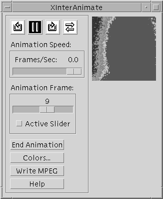

The CW_ANIMATE function creates a compound widget that— along with its associated routines — displays an animated sequence of images using off-screen windows knows as pixmaps . The speed and direction of the display can be adjusted using the widget interface.
CW_ANIMATE provides the graphical interface used by the XINTERANIMATE procedure, which is the preferred routine for displaying animation sequences in most situations. Use this widget instead of XINTERANIMATE when you need to run multiple instances of the animation widget simultaneously. Note that if more than one animation widget is running, they will have to share resources and will display images more slowly than a single instance of the widget.
This routine is written in the IDL language. Its source code can be found in the file cw_animate.pro in the lib subdirectory of the IDL distribution.
Unlike XINTERANIMATE, using the CW_ANIMATE widget requires calls to two separate procedures, CW_ANIMATE_LOAD and CW_ANIMATE_RUN, to load the images to be animated and to run the animation. Alternatively, you can supply a vector of pre-existing pixmap window IDs, eliminating the need to use CW_ANIMATE_LOAD. The vector of pixmaps is commonly obtained from a call to CW_ANIMATE_GETP applied to a previous animation widget. Once the images are loaded, they are displayed by copying the images from the pixmap or buffer to the visible draw widget.
See the documentation for CW_ANIMATE_LOAD , CW_ANIMATE_RUN , and CW_ANIMATE_GETP for more information.
The only event returned by CW_ANIMATE indicates that the user has clicked on the “End Animation” button. The parent application should use this as a signal to kill the animation widget via WIDGET_CONTROL. When the widget is destroyed, the pixmaps used in the animation are destroyed as well, unless they were saved by a call to CW_ANIMATE_GETP.
See the animation widget’s help file (available by clicking the “Help” button on the widget) for more information about the widget’s controls.
Note: Three routines associated with the CW_ANIMATE compound widget — CW_ANIMATE_GETP, CW_ANIMATE_LOAD, and CW_ANIMATE_RUN — do not create compound widgets themselves, but act on an existing CW_ANIMATE widget.
Result = CW_ANIMATE( Parent , Sizex , Sizey , Nframes [, MPEG_BITRATE = value ] [, MPEG_FORMAT = value ] [, MPEG_QUALITY = value ] [, / NO_KILL ] [, OPEN_FUNC = string ] [, PIXMAPS = vector ] [, TAB_MODE =value] [, / TRACK ] [, UNAME = string ] [, UVALUE = value ] )
This function returns the widget ID of the newly-created animation widget.
The widget ID of the parent widget.
The width of the displayed image, in pixels.
The height of the displayed image, in pixels
The number of frames in the animation sequence.
Set this keyword to a double-precision floating-point value to specify the MPEG movie bit rate. Higher bit rates will create higher quality MPEGs but will increase file size. The following table describes the valid values:
|
MPEG Version |
Range |
|
MPEG 1 |
0.1 to 104857200.0 |
|
MPEG 2 |
0.1 to 429496729200.0 |
Set this keyword to 0.0 (the default setting) to indicate that IDL should compute the BITRATE value based upon the value you have specified for the MPEG_QUALITY keyword. The value of MPEG_BITRATE returned is either the value computed by IDL from the MPEG_QUALITY value or the last non-zero valid value stored in this property.
Note: Only use MPEG_BITRATE if changing the value of MPEG_QUALITY does not produce the desired results. It is highly recommended to set the value of MPEG_BITRATE to at least several times the frame rate to avoid unusable MPEG files or file generation errors.
Set this keyword to a Boolean value that specifies the type of MPEG encoding to use:
0 = MPEG1 (the default)
1 = MPEG2
Set this keyword to an integer value between 0 (low quality) and 100 (high quality), inclusive, that specifies the quality at which the MPEG stream is to be stored. Higher quality values result in lower rates of time compression and less motion prediction which provide higher quality MPEGs but with substantially larger file size. Lower quality factors may result in longer MPEG generation times. The default is 50.
Note: Since MPEG uses JPEG (lossy) compression, the original picture quality cannot be reproduced even when setting MPEG_QUALITY to its highest setting.
Set this keyword to omit the “End Animation” button from the animation widget.
Set this keyword equal to a scalar string specifying the name of a user-written function that loads animation data. If a function is specified, an “Open ...” button is added to the animation widget.
Use this keyword to provide the animation widget with a vector of pre-existing pixmap (off screen window) IDs. This vector is usually obtained from a call to CW_ANIMATE_GETP applied to a previous animation widget.
Set this keyword to one of the values shown in the table below to determine how the widget hierarchy can be navigated using the Tab key. The TAB_MODE setting is inherited by lower-level bases and child widgets unless it is explicitly set on an individual widget.
Note: It is not possible to tab to disabled (SENSITIVE=0) or hidden (MAP=0) widgets.
Valid settings are:
|
Value |
Description |
|
0 |
Disable navigation onto or off of the widget. This is the default. Child widgets automatically inherit the tab mode of the parent base as described in Inheriting the TAB_MODE Value . |
|
1 |
Enable navigation onto and off of the widget. |
|
2 |
Navigate only onto the widget. |
|
3 |
Navigate only off of the widget. |
Note: In widget applications on the UNIX platform, the Motif library controls what widgets are brought into and released from focus using tabbing. The TAB_MODE keyword value is always zero, and any attempt to change it is ignored when running a widget application on the UNIX platform. Tabbing behavior may vary significantly between UNIX platforms; do not rely on a particular behavior being duplicated on all UNIX systems.
Set this keyword to cause the frame slider to track the frame number of the currently-displayed frame.
Set this keyword to a string that can be used to identify the widget in your code. You can associate a name with each widget in a specific hierarchy, and then use that name to query the widget hierarchy and get the correct widget ID.
To query the widget hierarchy, use the WIDGET_INFO function with the FIND_BY_UNAME keyword. The UNAME should be unique to the widget hierarchy because the FIND_BY_UNAME keyword returns the ID of the first widget with the specified name.
The “user value” to be assigned to the widget.
The widget ID returned by most compound widgets is actually the ID of the compound widget’s base widget. This means that many keywords to the WIDGET_CONTROL and WIDGET_INFO routines that affect or return information on base widgets can be used with compound widgets.
See Creating a Compound Widget for a more complete discussion of controlling compound widgets using WIDGET_CONTROL and WIDGET_INFO .
The only event returned by this widget indicates that the user has pressed the DONE button. The parent application should use this as a signal to kill the animation widget via WIDGET_CONTROL .
Assume the following event handler procedure exists:
PRO EHANDLER, EV
WIDGET_CONTROL, /DESTROY, EV.TOP
END
Tip: If you wish to create this event handler starting from the IDL command prompt, remember to begin with the .RUN command.
Enter the following commands to open the file ABNORM.DAT (a series of images of a human heart) and load the images it contains into an array H.
OPENR, 1, FILEPATH('abnorm.dat', SUBDIR = ['examples','data'])
H = BYTARR(64, 64, 16, /NOZERO)
READU, 1, H
CLOSE, 1
H = REBIN(H, 128, 128, 16)
Create an instance of the animation widget and load the frames. Note that because the animation widget is realized before the call to CW_ANIMATE_LOAD, the frames are displayed as they are loaded. This provides the user with an indication of how things are progressing.
base = WIDGET_BASE(TITLE = 'Animation Widget')
animate = CW_ANIMATE(base, 128, 128, 16)
WIDGET_CONTROL, /REALIZE, base
FOR I=0,15 DO CW_ANIMATE_LOAD, animate, FRAME=I, IMAGE=H[*,*,I]
Save the pixmap window IDs for future use:
CW_ANIMATE_GETP, animate, pixmap_vect
Start the animation:
CW_ANIMATE_RUN, animate
XMANAGER, 'CW_ANIMATE Demo', base, EVENT_HANDLER = 'EHANDLER'
Pressing the “End Animation” button kills the application.
|
 |
|
Pre 4.0 |
Introduced |
|
6.1 |
Added TAB_MODE keyword |
|
6.4 |
Added MPEG_BITRATE, MPEG_FORMAT, and MPEG_QUALITY keywords |
CW_ANIMATE_LOAD , CW_ANIMATE_RUN , CW_ANIMATE_GETP , XINTERANIMATE